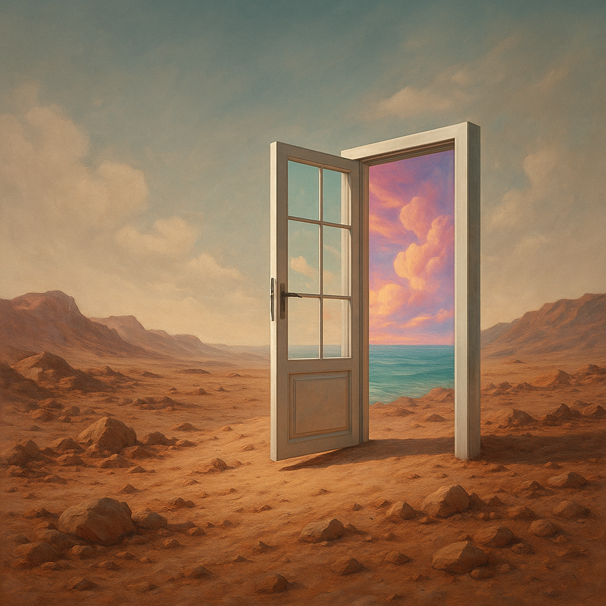

Eskapismus KDYŽ CHLAP UTÍKÁ SÁM PŘED SEBOU

Znáš ten pocit, kdy se ti život začne drolit pod rukama a ty místo řešení radši zapneš Netflix, skroluješ nesmyslná videa na TikToku nebo se sjedeš na pornu a levném pivě? To není lenost. To je eskapismus. Tichá epidemie dnešní doby, která chlapy pomalu, ale jistě zabíjí zevnitř. A většina si toho ani nevšimne.
Eskapismus je útěk před realitou. Před povinnostmi. Před vlastními démony. Před rozhodnutími, o kterých víš, že bys je měl udělat. Před životem, jaký doopravdy máš. A čím víc utíkáš, tím větší sračky si na hromadu hážeš. Až tě jednou zavalí.
Jak to začíná
Nikdo se neprobudí s tím, že si řekne: „Dneska se zničím eskapismem.“ Začne to nenápadně. Máš blbý den v práci. Rozhádaný vztah. Něco tě sere. Nechceš to řešit. Tak si pustíš seriál, objednáš pizzu, dáš pár piv a zapneš telefon. Jedna hodina. Dvě. Tři. A najednou zjistíš, že tímhle způsobem zabíjíš každý druhý den.
Protože čelit sám sobě bolí. Proto radši utečeš do světa, kde tě nikdo neotravuje. Kde se nemusíš cítit mizerně. Jenže realita počká. A když se vrátíš, bude horší než předtím.
Nejčastější formy eskapismu
Každý máme něco. Alkohol. Herní konzole. Pornografie. Sociální sítě. Tinder. Netflix. Zbytečné vztahy. Workoholismus. Přehnaný sport. Drogy. Žraní sraček. Všechno, co ti dá krátkodobou úlevu od nepříjemné reality. Ale nic z toho tvůj problém neřeší. Jen ho odkládáš.
Eskapismus je jak utíkat před rozjetým vlakem. Můžeš chvíli zdrhat, ale nakonec tě semele. Čím dřív si to přiznáš, tím máš větší šanci, že z toho vybruslíš.
Proč to chlapi dělají
Protože se bojíme. Zklamat. Selhat. Ztratit kontrolu. Přiznat si, že něco nezvládáme. Společnost tě naučí, že chlap musí být v pohodě. Hlavně se nesesypat. Tak se tváříš, že je všechno cajk. A když to nejde, utečeš.
Problém je, že čím déle to budeš dělat, tím víc ti život proklouzne mezi prsty. Až si jednoho dne uvědomíš, že nemáš žádný vztah, žádný cíl, žádnou hrdost a žádný koule něco změnit. Protože sis všechno uvařil v pohodlné ulitě útěků.
Jak z toho ven
První krok? Přiznej si to. Přestaň si hrát na to, že máš situaci pod kontrolou. Podívej se, kam utíkáš. Kolik času zabíjíš nesmysly. Kolik problémů jsi odložil, protože ses bál je řešit.
Pak udělej první krok zpět. Přestaň utíkat. Sedni si sám se sebou. Napiš si na papír všechno, co tě sere. Všechno, co odkládáš. A jednu věc z toho dnes vyřeš. Nepotřebuješ změnit celý život za den. Stačí se začít hýbat správným směrem.
Tvrdá disciplína místo útěku
Nevěř na motivaci. Ta tě v průseru nezachrání. Potřebuješ disciplínu. Každ den dělej něco, co se ti nechce. Přesně ty věci, před kterými utíkáš. Jen tímhle způsobem vybuduješ sílu čelit životu, ne před ním zdrhat.
Když ti bude nejhůř, nezapínej seriál. Jdi se projít. Když budeš chtít utéct k flašce, dej si ledovou sprchu. Když tě bude svádět porno, jdi dřepovat. Cokoliv, co tě dostane zpět do reality. Je to hnusné, ale účinné.
Nečekej na ideální podmínky
Žádný „až“. Až budu mít čas. Až bude lepší nálada. Až si to sedne. Ne. Život se tě nebude ptát. Prostě buď chlap a začni něco dělat i v chaosu. A hlavně — neber si ze všech těch gaučových králů příklad. Většina lidí okolo tě bude v tom útěku podporovat, protože jsou na tom stejně. Nech je tam a pojď si svou cestu.
Začni malými věcmi
Nikdo po tobě nechce, abys ze dne na den vyhrál maraton. Vypni Netflix. Zruš jeden debilní chat, kde si lidi stěžují na život. Vymaž aplikace, co tě ničí. Každý den udělej jednu těžkou věc. Zvedni telefon a omluv se, když máš. Vyřeš účty. Vysyp šuplík bordelu. Seřvi se v zrcadle. Nejde o ty věci samotné. Jde o to, že přestaneš zdrhat.
Odřízni toxické věci a lidi
Jedna z nejhorších věcí je držet si kolem sebe lidi, co tě ve tvém útěku podporují. Kámoše, co tě táhnou na pivo, ženské, co tě jen využívají, nebo rodinu, co ti vsugerovává, že na nic nemáš. Přestaň se bát být sám. Osamělost je pro chlapa chvíle, kdy konečně uslyší sám sebe. V tichu se ukáže, kdo jsi. A jakmile si na tohle zvykneš, nebudeš potřebovat utíkat.
Přiznej si svoje démony
Každý máme něco. Strach z odmítnutí. Z opuštění. Ze selhání. Z toho, že nejsme dost. Tyhle věci tě budou nutit utíkat, dokud si je nenapíšeš černé na bílém a nevezmeš jim sílu. Napiš si je. Přečti si je nahlas. A pak jednej navzdory nim. Ne proto, že tě to baví. Ale protože už tě nebaví utíkat.
Život není fér a nikdy nebude
Přestaň čekat, že bude. Nehraj hru „kdyby tohle a tohle bylo jinak, tak ...“. Není. Tohle je tvoje realita. Se vším hnusem, bolestí, ztrátami, chybami. A je tvoje povinnost s tím něco dělat. Nikdo to za tebe neudělá. A čím dřív to přijmeš, tím míň budeš potřebovat utíkat.
Důslednost tě zachrání
Zapomeň na zkratky. Každý den si otestuj, jestli utíkáš, nebo konáš. Když dneska vydržíš sám se sebou, zítra to bude o trochu snazší. A pak zas. Dokud ten útěk nebude tvoje minulost a místo něj přijde respekt sám k sobě. To je život na Mimo trasu. Ne pohodlný. Ale pravý.
Závěr
Utíkat je snadné. Čelit sám sobě je těžké. Ale pokud chceš žít jako chlap, který večer usíná s klidem a ne s těžkým kamenem na hrudi, musíš začít bojovat. S vlastní leností. Strachem. Sračkami. Přestaň utíkat a začni žít. Tady a teď.